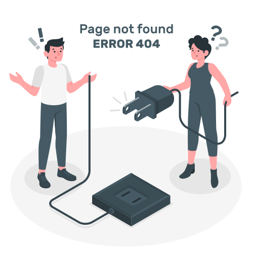

{{ quizes[0].topic_name }} Quiz
{{ points }} points
Question {{ currentQuestion + 1 }} of
{{ quizes.length }}
{{ quizes[currentQuestion]?.question_text }}

Congratulation!!!
You have completed the quiz
View your results
below
Attempted Questions:{{ quizes.length }}
Correct answers: {{ correctAnswer }}
Incorrect answers: {{ incorrectAnswer }}
Total Score: {{ process }}%
